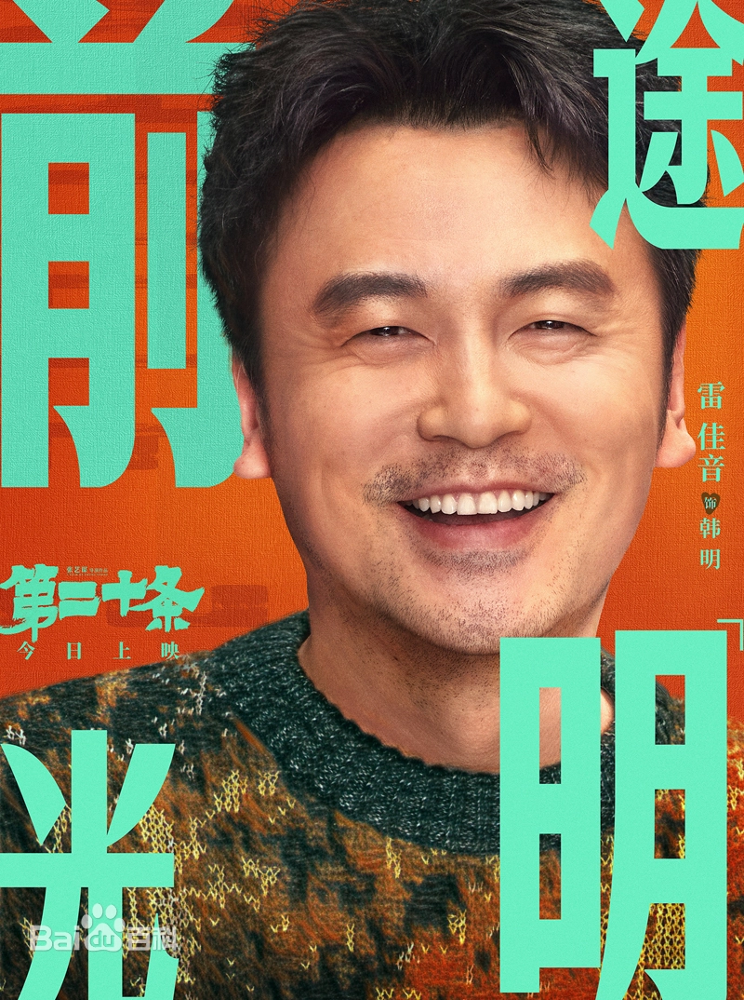
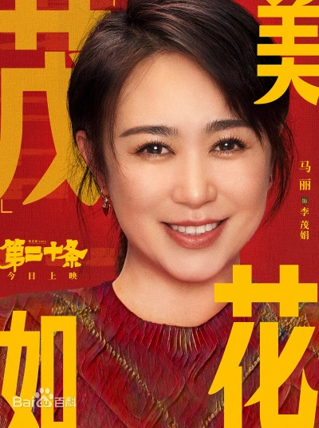
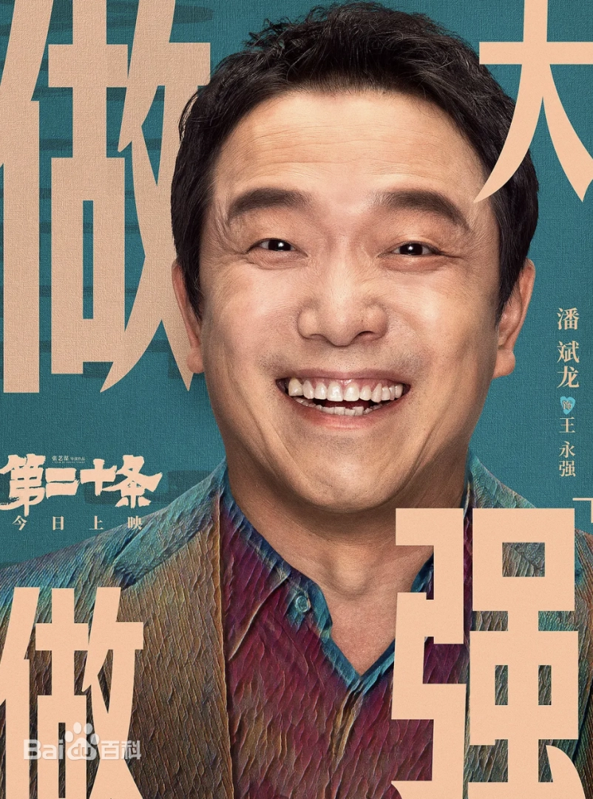
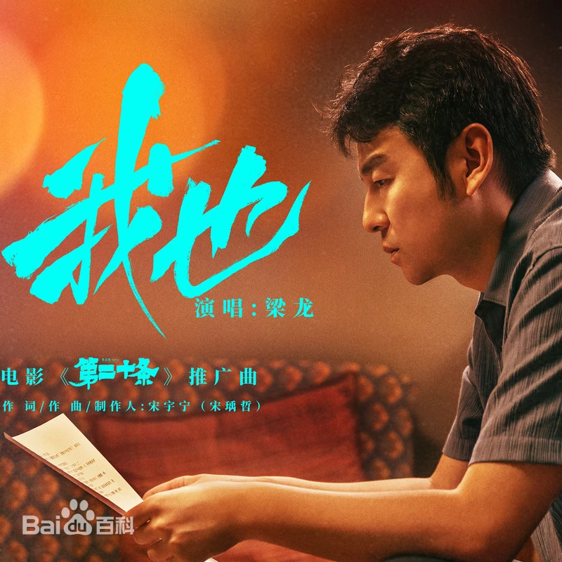

演唱:张碧晨
作词:陈嬛
作曲:陈嬛
编曲:何山
演唱:梁龙
作词:宋宇宁(宋瑀哲)
作曲:宋宇宁(宋瑀哲)
编曲:刘也、宋宇宁(宋瑀哲)
| 角色介绍 | |
|  | 韩明 |
| 演员 雷佳音 | |
| 有抱负的检察官，人到中年，他一心渴望在职业生涯中更上一层楼。然而，一场突如其来的车祸打乱了他的计划，也改变了他的人生轨迹。在这起车祸中，他意外发现了隐藏在案件背后的阴谋和权力的腐败。 | |
|  | 李茂娟 |
| 演员 马丽 | |
| 韩雨辰的母亲，性格大大咧咧，得知韩雨辰在学校做了正确的事情却被颠倒黑白，于是，她找到了韩雨辰学校的教导主任，同时也是实施校园暴力学生的父亲，在沟通过程中，她义愤填膺的揍了教导主任，表达了自己的不满。 | |
| 郝秀萍 | |
| 演员 赵丽颖 | |
| 穷苦的聋哑人，王永强的妻子，他们育有一个女儿，女儿也是哑巴。为了筹集手术费与村霸刘文经产生交集。刘文经以讨债为名，欺负了郝秀萍，并长期霸凌，强制占有了郝秀萍。她在面对欺凌和威胁时选择了沉默和忍耐，但最终她还是选择了以死来抗议这不公和压迫。 | |
| 吕玲玲 | |
| 演员 高叶 | |
| 一身正气的女检察官，韩明的搭档。她性格强势，充满正义感，办案思路清晰，一心维护公平正义。曾经是韩明的初恋，大学的时候，她遭学长猥亵是韩明出手相救。王永强案发生后，她主张正当防卫，却因为执拗被撤职。 | |
| 韩雨辰 | |
| 演员 刘耀文 | |
| 韩明的儿子，性格阳光，爱打抱不平。一次他见到校领导的儿子在实施校园暴力，因见义勇为，没想到因为打伤了对方，却被对方报警立案。他受到了校领导儿子欺负，他的父亲为了他的前途也收到校领导给到的压力。 | |
|  | 王永强 |
| 演员 潘斌龙 | |
| 郝秀萍的丈夫，疼爱妻子和女儿，得知女儿的病可以治好，他为了筹集手术费，找村霸刘文经接了高利贷。但看到刘文经霸凌妻子后，他在恐惧和愤怒的情况下用剪刀将刘文经乱刺致死。最终他的行为符合《刑法》第二十条之规定，属正当防卫，不负刑事责任，不予起诉。 | |
| 音乐原声 | |
|
电影《第二十条》片尾曲 |
| 曲目:《你也》 演唱:张碧晨 作词:陈嬛 作曲:陈嬛 编曲:何山 |
|
|  | 电影《第二十条》推广曲 |
| 曲目:《我也》 演唱:梁龙 作词:宋宇宁(宋瑀哲) 作曲:宋宇宁(宋瑀哲) 编曲:刘也、宋宇宁(宋瑀哲) |
|
| 获奖记录 | ||||
| 获奖时间 | 颁奖方 | 奖项名称 | 获奖方 | 备注 |
| 2024年1月 | 2023微博之夜 | 微博年度最受期待春节档电影 | 《第二十条》 | 获奖 |